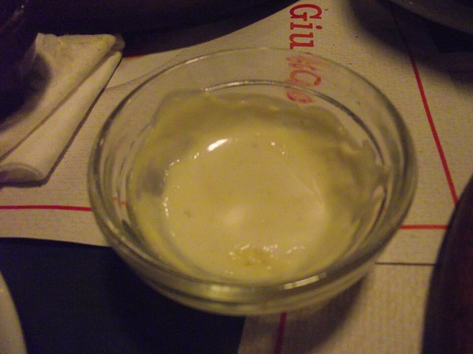

Nabiał i jaja
Ser pleśniowy (blue)
Ser pleśniowy (blue): 21 g białka, 353 kcal, 2 g węglowodanów i 29 g tłuszczu na 100 g. Kategoria: Nabiał i jaja.
Kalorie353 kcalna 100 g
Białko / proteiny21 g
Węglowodany2 g
Tłuszcz29 g
Cena (szac.)~7,97 złza 100 g
Ceny zaktualizowano: maj 2026 (szacunek — ceny w popularnych supermarketach)
Porcja: porcja (30g)
| Kalorie | 106 kcal |
|---|---|
| Białko | 6.3 g |
| Węglowodany | 0.6 g |
| Tłuszcz | 8.7 g |
| Cena (szac.) | ~2,39 zł |
Szczegółowe składniki odżywcze na 100 g
| Wartość energetyczna (kalorie) | 353 kcal |
|---|---|
| Białko (proteiny) | 21 g |
| Węglowodany | 2 g |
| Tłuszcz | 29 g |
| Tłuszcze nasycone | 18 g |
| Tłuszcze nienasycone | 11 g |
| Witaminy i minerały | Wapń, Witamina B2, Fosfor |
| Współczynnik kcal / 1 g białka | 16.8 |
| Cena produktu (szac. za 100 g) | ~7,97 zł |
| Cena za 100 g białka (szac.) | ~37,94 zł |